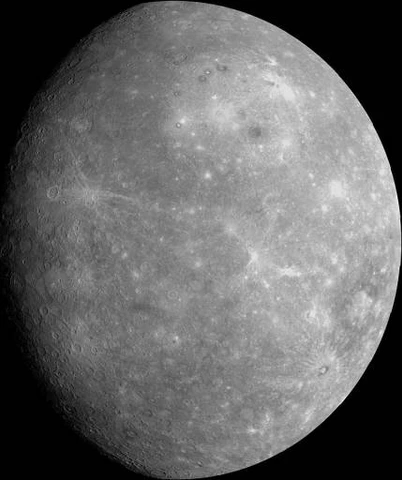
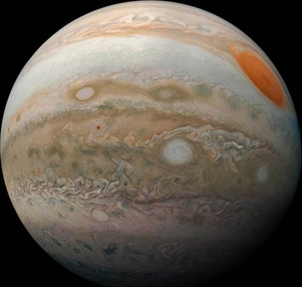
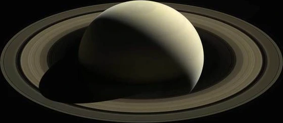
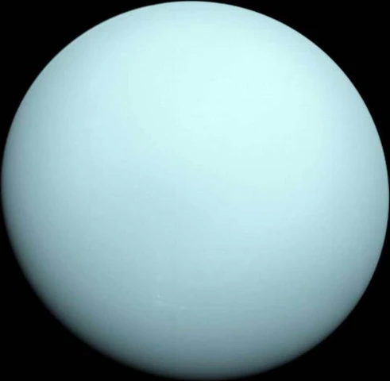
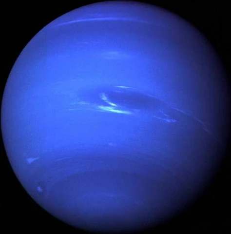

EARTH
Learn more about the fascinating details that we call our home, Planet Earth. Course enrollment
starts today. Early Bird tickets typically last a week, don’t miss out!
01 / OUR COSMIC NEIGHBORHOOD
Explore the
Solar System
From sun-scorched rock to distant ice giants. Meet the eight worlds that share our star.

Mercury
A year here passes in just 88 Earth days.Field notesThe smallest planet races around the Sun, yet turns slowly on its axis.
Discover Mercury at NASA ↗Venus
A thick atmosphere makes this our hottest planet.Field notesIts dense carbon dioxide atmosphere traps heat beneath clouds of sulfuric acid.
Discover Venus at NASA ↗Earth
The only world we know of that supports life.Field notesLiquid oceans cover about 71 percent of our home planet’s surface.
Discover Earth at NASA ↗Mars
Home to Olympus Mons, the solar system’s largest volcano.Field notesAncient river valleys and lakebeds hint at a much wetter past.
Discover Mars at NASA ↗
Jupiter
This enormous world spins once in about 10 hours.Field notesFast rotation drives powerful jet streams between its bright zones and dark belts.
Discover Jupiter at NASA ↗
Saturn
Its magnificent rings are made mostly of pieces of ice.Field notesCountless fragments orbit together, ranging from tiny grains to mountain-sized chunks.
Discover Saturn at NASA ↗
Uranus
An extreme tilt sends it rolling around the Sun on its side.Field notesMethane in its atmosphere absorbs red light, giving the planet its blue-green color.
Discover Uranus at NASA ↗
Neptune
Winds here can exceed 1,200 miles per hour.Field notesThe most distant planet is also the solar system’s windiest world.
Discover Neptune at NASA ↗
Worlds shown not to scale. Some imagery uses enhanced color. Explore the science at NASA ↗
02 / A REASON TO LOOK UP
Why Explore Space?
Space exploration helps us understand where we came from, how planets evolve, and what possibilities may exist beyond Earth.
03 / HISTORIC MISSIONS
Missions that changed
how we see the universe
-
THE MOON
Apollo 11
First humans on the Moon.
-
BEYOND THE PLANETS
Voyager 1
Launched to explore the outer planets and now travelling through interstellar space.
-
MARS
Curiosity
Exploring Mars to study its geology, climate and past habitability.
-
THE LUNAR SOUTH
Chandrayaan-3
India’s successful soft landing near the Moon’s south polar region.
Four milestones in an ongoing journey of discovery.